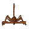

King Scorpion

| Config name | kingscorpion |
| NPC id | 144 |
| Combat level | 32 |
| Hitpoints | 30 |
| Attack / Strength / Defence | 30 / 29 / 23 |
| Respawn | 50 ticks |
| Options | Attack |
| Aggression | cowardly |
| Wander range | 8 tiles from spawn |
| Max range | 10 tiles from spawn |
| Defined in | scripts/_unpack/225/all.npc |
| Bonuses | Stab def 5, Slash def 15, Crush def 15, Range def 5 |
King Scorpion
Wow! Scorpions shouldn't grow that big.
Show all 12 spawns on the world map → Open in knowledge graph →
Drops
No drops recorded.
Locations
| Area | Coordinates | Level | Count | Map |
|---|---|---|---|---|
| Dark Wizards' Tower | 2851, 3298 | 0 | 1 | view |
| Dark Wizards' Tower | 2855, 3303 | 0 | 1 | view |
| Fishing Platform | 2842, 3298 | 0 | 1 | view |
| Fishing Platform | 2844, 3291 | 0 | 1 | view |
| Lava Maze | 3070, 3829 | 0 | 1 | view |
| Lava Maze | 3070, 3836 | 0 | 1 | view |
| Lava Maze | 3075, 3848 | 0 | 1 | view |
| Lava Maze | 3090, 3841 | 0 | 1 | view |
| Make Over Mage | 2859, 3283 | 0 | 1 | view |
| Make Over Mage | 2861, 3295 | 0 | 1 | view |
| Park (underground) | 3040, 9775 | 0 | 1 | view |
| Park (underground) | 3048, 9770 | 0 | 1 | view |